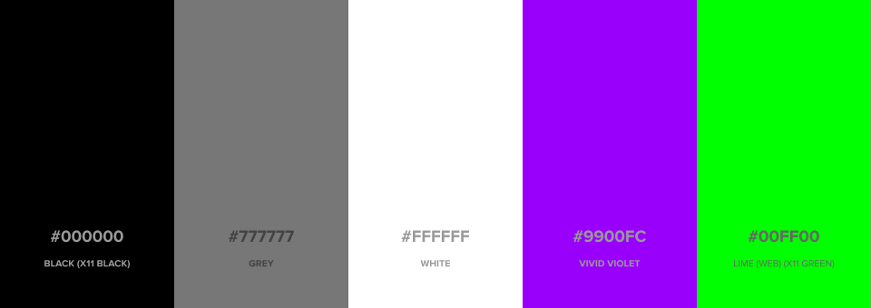

Look and Feel
Name and wordmark
In prose or body text our name is in title case:
- Hypha Worker Co-operative [when referenced for the first time in body text]
- Hypha [short form and after initial reference]
- Hypha Worker Co-operative Inc. [our legal name]
For web or print treatments we uppercase "Hypha":
- HYPHA Worker Co-operative
- HYPHA
We use the following wordmark in online spaces, services, and social media where we represent the organization:

Typography
Our heading typeface is Work Sans and our secondary (body) typeface is Proxima Nova. For the web we prefer using the sans-serif system font stack as our typeface.
Body typeface (web)
font-family: -apple-system, BlinkMacSystemFont, avenir next, avenir, helvetica neue, helvetica, ubuntu, roboto, noto, segoe ui, arial, sans-serif
Colours

Black (X11 Black)
#000000;rgb(0, 0, 0);
Grey
#777777;rgb(119, 119, 119);
White
#FFFFFF;rgb(255, 255, 255);
Vivid Violet
#9900FC;rgb(153, 0, 252);
Lime (Web) (X11 Green)
#00ff00;rgb(0, 255, 0);
Preferred icons and emoji
We tend to use the following emoji and iconography:
üçÑ :mushroom:
üåø :herb:
üè¥ :black_flag: or ‚öë ⚑
üêõ :bug:
üå± :seedling:
üéõÔ∏è :control_knobs:
üå¥ :palm_tree:
üçπ :tropical_drink:
☀️ :sunny:
üõ∞Ô∏è :artificial_satellite:
Assets and templates
Look and feel assets are available in our Public Drive, and include:
- Wordmark
- Image bank